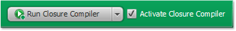
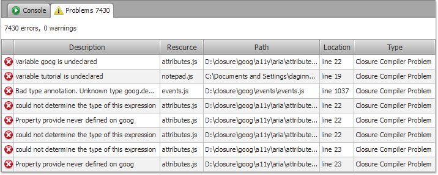

- Open your Build Configuration and choose Compiler page.
- On the Compiler page, find Run Closure
Compiler button and press it to run the compiler.

- Notice that the compiler has finished running and the
following message appears in the Console
view telling you that building has finished.
- The compiler also reports compilation errors to the
console.
- Use Problems view to review
and manage errors and warnings related to the passed code.

The Run command is also available in other places, such as the
main toolbar. You also can use Ctrl+R
(Windows, Linux) and Cmd+R (Mac)
key binding. In this case, all of the activated compilers will be
launched.
Use Run
button to launch and relaunch the compiler using current buildpath
and options.
Use Cancel button to stop the compiler.